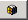

Add Symbols
- Add Symbols to the piping diagram as needed.
NOTE: If you are using a Symbol that already contains Pipe elements, you should adjust the size of the Symbol by rescaling the Symbol in order to maintain the piping aspect ratio.
- In the Element Tree, select the layer you want to add the Symbol to, or, if the Symbols display on a separate layer, do the following:
- Click New Layer
 .
. - Navigate to the Properties view (Layer Properties), expand the General section, and in the Description field, type a name for the layer, for example, Symbols, Equipment etc. .
- In the Library Browser, from the Filter Type drop-down menu, click Symbol

. - A list of all available Symbols displays in the Library Browser view.
- In the Type to Filter field, type the name of a specific Symbol.
- From the Filter by Library drop-down menu, select a library to search. You can also select <All> to search through all available libraries in your project.
- The Symbol matches automatically display in the view as you enter the text.
- Do one of the following to add a Symbol to a graphic:
- Right-click the Symbols and click Insert from the menu that displays on right-click. The Symbol is added to the graphic. To select multiple symbols, press the CTRL key and click the Symbols you want to add from the Symbol Browser display.
- Click the Symbol and drag it to the active graphic.
- You have a Symbols or Equipment layer, and if you like, you can also create a layer for any text labels, or headers, etc. as needed.